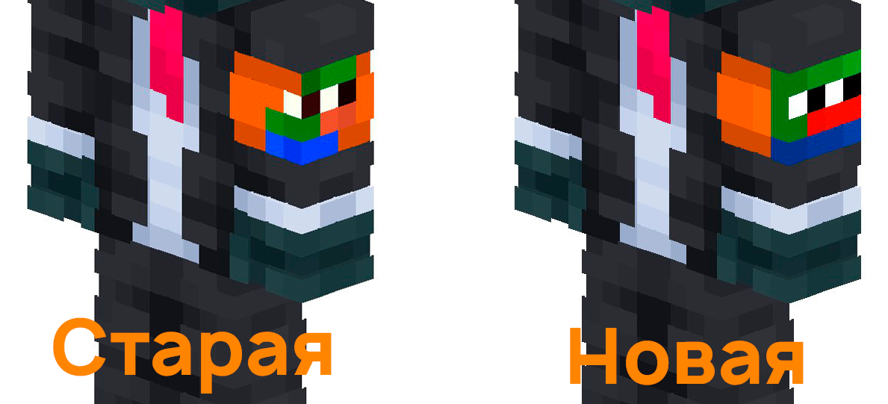

О нас
PPLBandageBot - это Телеграм бот, созданный для помощи новым игрокам Minecraft сервера Pepeland добавить повязку на свой скин. Бот предлагает широкие возможности по редактированию повязки. Вы можете выбрать один из 9 предложенных цветов повязки или отправив свой в формате HEX или RGB, так же есть 7 авторских повязок от студии художников Шейп. Вы можете выбрать тип Пепе на повязке: Старый или Новый.  Помимо наложения повязки, бот предлагает возможность инвертировать цвета на вашем скине или перевести его в чёрно-белый.Программист: AndcoolSystems
Дизайнер: Гамдав